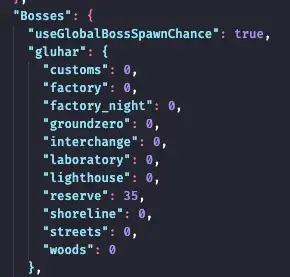
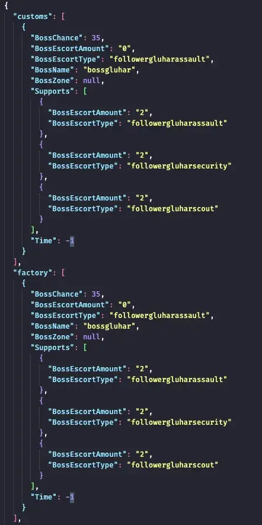
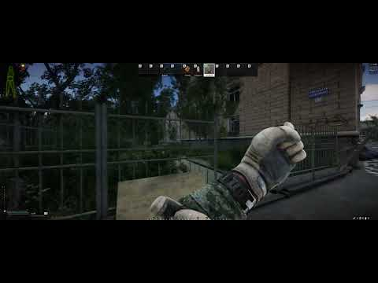
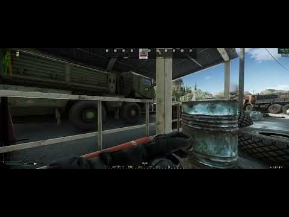
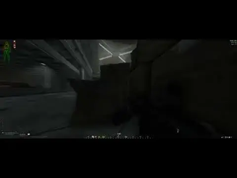
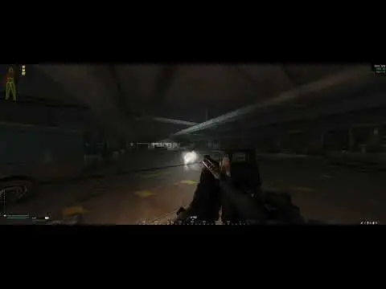

SWAG + Donuts - Dynamic Spawn Waves and Custom Spawn Points
- Downloads
- 454,701
- Favourites
- 7
- Mod lists
- 4
SPT 3.10.x ONLY REQUIRED MODS FOR SWAG + DONUTS
Waypoints by DrakiaXYZ
Unity Toolkit by Arys
STRONGLY RECOMMENDED MODS
SAIN by Solarint
Looting Bots by Skwizzy
Questing Bots by DanW Unicorn (for more spawn points)by PenOkOh
None of this would be possible without PROPS, the creator of SWAG and DONUTS
**SWAG (Simple Wave AI Generator)**is a server mod that enhances the spawns in your SPT raids by giving you full control over each and every bot that spawns. This mod comes with a full set of spawn “patterns” built-in so all you have to do is install and play.
DONUTS is a client mod that provides a full in-raid spawn point editor and dynamic spawn system. Donuts comes with a full set of spawn “patterns” specifically created with and for Donuts built-in so all you have to do is install and play.
Together, SWAG + DONUTS provide complete spawn control, unpredictability and freedom. Bots in D2. Crackhouse. Streets Apartments. Interchange Railway. Exfils. Anywhere.
What is SWAG + Donuts?**
SWAG + Donuts is a complete overhaul of the SPT bot spawning system. If you’re not a fan of vanilla spawns for whatever reason then this is the mod for you. SWAG + Donuts is a combination of client (Donuts) and server (SWAG) mods that each handle certain parts of the spawning system in SPT in various ways and offer a wide variety of flexibility and config options. All PMC and SCAV spawn points are completely custom made for all maps and can be modified with many different parameters.
By default, SWAG + Donuts is packaged with a set of “spawn presets” that you can select in-game (F8 for GUI) among lots of other options you can tinker with, some you can toggle on/off mid-raid.
This is a big mod and be complicated for some - fear not, if all you want is to install a cool spawn mod and just play then you can do just that, the defaults are mostly tuned for a live-like experience. If you prefer that PMCs do NOT respawn during a raid then be sure to select any of the “starting-pmcs-only-*” presets from the Donuts F12 menu.
Features include
- in-game GUI (F9 default)
- custom spawn points and custom zones for all maps, created with a built-in spawn point editor
- various “spawn presets” available or create your own
- options for spawns you can toggle mid-raid, such as force bot type, spawn hard cap, hot spot boost and more (more info on these options below).
- add, remove, change any boss spawns or other bot types (add all bosses to all maps, spawn 10 Kabans and everywhere in-between)
- in-raid custom spawn point editor - edit parameters such as spawn timers, bot count, spawn distance from the player
- adjust bot squad size and chance, max PMC/SCAV counts per map, per preset and much more
For more info. please see the DONUTS and SWAG tabs above.
How To Install
If you have a previously installed version - I highly recommend you do a “fresh install” - completely uninstall the mod first. Just be sure to save any settings you have created or changed.
1. Download the zip from the link on this mod page
2. Extract to your SPT folder
3. Play
How To Uninstall
1. Delete ‘SWAG’ from user/mods
2. Delete ‘dvize.Donuts’ from BepInEx/plugins
3. Clear your temp files (via SPT launcher) just in case
Mod Compatibility
Any mod that changes SPAWNS is likely NOT compatible with SWAG
IF YOU USE REALISM MOD
first, make sure you have the latest REALISM installed. If you do then Realism will config everything for you - no changes needed.
If you want to use Realism Boss changes with SWAG:
go to the SWAG config.json and change these to true:
**IF YOU USE SVM (Server Value Modifier)
Any of the following options should be DISABLED and are NOT compatible with this mod:
- any options under ‘Events’ (spawn related stuff)
- any options in the ‘Bots’ tab
**Donuts Main Settings
Donuts On/Off**
(default: Enabled)
Enables or disables Donuts completely. This must be toggled before a raid.
Despawn Option
(default: Enabled)
If enabled, any PMCs or SCAVs that spawn over your Donuts presets caps will be despawned on a 10 second interval down to your max cap. Note: despawning only occurs after a spawn points has been triggered, there may be brief periods of time where your bot count will be inflated. If you’re not a fan of despawning please see the Hard Cap option below.
If disabled, Donuts spawns essentially have 0 max cap.
Bot Hard Cap Option
(default: Disabled)
If enabled, Donuts will skip any spawn points triggered over your Donuts preset caps. In other words, if you have an active alive bot count that is already at your Donuts preset bot limits then Donuts will skip spawns until a bot dies (sort of like vanilla).
If you do not wish to use despawning then I highly suggest using this option instead. You can also use both options along with the hotspot options in the Advanced Settings (see Advanced Settings section below)
Cool Down Timer
(default: 300 seconds)
Donuts spawn global cooldown. This number defines the time period that occurs after a spawn points is triggered and the max bots before cooldown value has been met (see: Donuts Spawn Point Config Explained). Once this time has passed then the spawn point can be triggered again.
Donuts PMC Group Chance
(default: Default)
This is a string value that defines the probabilities of certain PMC squad sizes. By default, all Donuts PMC spawn points are configured to spawn up to 5 bots, however, this can be changed to any number.Default is “Default”, which is balanced set of probabilities for a live-like experience. “Max” forces the max possible number of bots configured by that spawn point (so, 5 bots by default). “None” forces all bots to spawn solo. All of these probabilities are configurable (see: Donuts Advanced Settings)
Donuts SCAV Group Chance
(default: Default)
Same as PMC Group Chance
Donuts PMC Spawn Difficulty
(default: Normal)
This defines the base game difficulty that is applied to your bot spawns. This is not the same as SAIN difficulty. Donuts dificulty is the same as base game difficulty, this option simply provides a more flexible way to define difficulty for your spawns separated by bot type.
Donuts SCAV Spawn Difficulty
(default: Normal)
Same as above.
Other Bot Type Spawn Difficulty
(default: Normal)
Same as above. Note: This applies to all bots other than PMCs and SCAVs that are spawned by Donuts, not SWAG.
**PMC Raid Preset Selection
(default: Live Like (Random))
Select a Donuts spawn preset here. Choose from any of the pre-packaged spawn presets that come with the mod or feel free to experiment and create your own. Default is the Live Like (Random) preset, which is a random pool of live-like presets (more info please see: Donuts Presets Explained)
SCAV Raid Preset Selection**
(default: scav-raids)
Same as above but specifically for SCAV raids. Default is the “scav-raids” preset specifically balaned for SCAV raids.
Show Scenario Selection
(default: Enabled)
If enabled, shows the preset being selected at the bottom-right of your screen when you load into a raid.
vvvvvvv FOR OTHER OPTIONS PLEASE KEEP READING BELOW vvvvvvv
Donuts Additional Spawn Settings
Force PMC Faction (default: Default)
Forces a certain PMC faction, if desired. Default is random USEC or BEAR. Can be toggled mid-raid.
Force Bot Type for All Spawns (default: Disabled)
Forces a specific bot type for all spawns. Can be toggled mid-raid.
Max Respawns for PMC/SCAV per Raid (default: 0 - unlimited)
Sets a limit on how many PMC/SCAVs can respawn during a raid. Default is 0 which is no limit. Spawn Hard Stop
Hard Stop: Time Left in Raid (default: Disabled, 300 seconds)
If enabled, Donuts will stop spawning PMCs or SCAVs once ther eis n time left in your raid (defined by Time Left in Raid). Hot Spot Spawn Boost (default: Disabled)
If enabled, forces all hot spot spawn points to have a 100% chance to spawn (if triggered). Hot Spot Ignore Hard Cap (default: Disabled)
If enabled, all hot spot spawns ignore the Donuts hard cap (if enabled, see above). I recommend using the following for an optimial experience while saving some frames:
Despawn Enabled
Hard Stop Enabled
Hot Spot Boost Enabled
Hot Spot Ignore Hard Cap Enabled
Use Global Min Distance From Player
(default: Enabled)
If enabled, you can set the minimum distance (in meters) that bots should spawn away from the player (you). This option must be enabled for the values for maps to work.
Use Global Min Distance From Other Bots
(default: Enabled)
If enabled, you can set the minimum distance (in meters) that bots should spawn away from other bot spawns. This is useful if you want to avoid bots spawning too close to each other and killing each other too quickly. This option must be enabled for the values for maps to work.
Donuts Advanced Settings
Raid Load Time Delay** (default: 60 seconds)
This is the amount of time (in seconds) that Donuts is allowed to generate bot data during raid load. This is important for your starting bots to spawn with you, at the same time.
If this delay is too short then some bots may spawn late at the start. A longer delay means your raid load might take a little longer but your spawns should be more stable at the start. Bot Cache Replenish Interval (default: 10 seconds)
This is the time interval that Donuts “replenshes” bot data - in other words, Donuts generates bot data on a regular interval so that most of your bot spawns are instant. Max Spawn Tries Per Bot
(default: 20)
Maximum number of times Donuts will try to spawn a bot (if it fails) before it skips. You generally never need to change this unless you know what you’re doing.
Despawn Bot Interval
(default: 15 seconds)
This is the time interval that Donuts despawns bots (if enabled). Too short and your may experience a minor performance loss. Too long and Donuts may not be despawning bots fast enough - it depends on your settings.
Group Chance Weight Distribution
Low, Default, High
This defines the probabilities of certain group sizes separated by option.
Formula: individual weight / total weight = % chance
Example:
Default: 210, 210, 45, 25, 10
Group sizes of: 1, 2, 3, 4, 5 respectively
Total weight: 210 + 210 + 45 + 25 + 10 = 500
Solo bot spawn: 210 / 500 = 0.42 = 42%
5-man: 10 / 500 = 0.02 = 2%
etc…
Spawn Point Editor
If you plan to use the spawn point editor be sure to set key binds for creating and deleting spawn marker keys (see above screenshot).
For details on all parameters please see the section below: Donuts Spawn Point Parameters Explained
Donuts - Presets Explained
RANDOM PRESETS
Random presets are a collection of presets that are chosen at random given the weights defined by you.
The configs for these can be found here: BepInEx\plugins\dvize.Donuts\RandomScenarioconfig.json
Live Like
An equal chance for any of the live-like presets (live-like, alt2, alt3, alt4)
Starting PMCs Only
An equal chance for either of the starting-pmcs-only-live-like presets
Whole Lotta SCAVs
An equal chance for either of the morescavs presets with a small chance for “all-scavs”
ALL PRESETS
Any of the following presets can be selected from the Donuts F12 menu. Simply select a preset of your choice before the next raid and play, no need to set it every time.
live-like, live-like-alt
Presets that aim to provide a “live-like” experience with PMC respawns. live-like-alt has different starting bot spawn locations. If you do not wish to have PMC respawns in your raids then try starting-pmcs-only presets!
crazyraids
Increased spawn frequency on all maps, for all spawns, ~80-90% chance to spawn for each and all spawns. if the live-like presets don’t offer enough action for you then try this.
impossibleraids
Increased spawn frequency on all maps to 100% for all spawns - if crazyraids doesn’t offer enough action for you then try this.
quietraids
Decreased spawn frequency on all maps - for a more relaxed Tarky experience.
starting-pmcs-only-live-like, starting-pmcs-only-live-like-alt
Only spawn PMCs at the start - no PMC respawns. Alt version spawns starting PMCs at more random locations.
starting-pmcs-only-morescavs
Starting pmcs only but with more scavs.morepmcs
“live-like” but with more PMCs, fewer SCAVs. Good for PMC kill quests.
morescavs
“live-like” but with more SCAVs, fewer PMCs. Good for SCAV kill quests.
scav-raids
Live-like but with a minor twist - PMC spawns are sprinkled throughout maps rather than at live starting locations to simulate a SCAV entering mid-raid.
Donuts Spawn Point Parameters Explained
“MapName” - name of the map. be sure you use proper names, i.e. “bigmap” for Customs
“GroupNum” - spawn group. all spawns with the same GroupNum will share one trigger. in other words, if you have 3 spawn points in one group, and one of those trigger, then the other 2 won’t.
“Name” - name of spawn. you can name them whatever you want
“Position”: { - x,y,z coordinates of spawn position. this is provided by the in-raid spawn point editor
“x”: 89.5103455,
“y”: 4.672584,
“z”: -158.156723
}
“WildSpawnType” - bot type, i.e. pmc, sptusec, assault, etc.
“MinDistance” - min spawn point radius (can be 0)
“MaxDistance” - max spawn point radius - this is the size of the spawn point. when using the spawn editor, enable “real size” markers to see the actual radius of your spawn point
“MaxRandomNumBots” - max number of bots to spawn. this is 1-max inclusive and it’s random
“BotTriggerDistance” - distance to player for spawn trigger. once the player is within this distance then the spawn timer will start
“BotTimerTrigger” - spawn timer. if the player is within trigger distance this timer will continue to run
“SpawnChance” - spawn chance %
“MaxSpawnsBeforeCooldown” - once this many bots have spawned the spawn point will enter a cooldown (wait for 180s, default, configurable in F12 menu)
“IgnoreTimerFirstSpawn” - if true, once player is within BotTriggerDistance the spawn will trigger regardless of timer. If false, the timer must run at least once for the first spawn trigger.
“MinSpawnDistanceFromPlayer” - the min distance from player that bots should spawn. this is to hopefully prevent bots spawning too close to you.
---
The Rules of DONUTS
Rules
1. Bots will only spawn in same level/height as the spawn marker
2. Bots will only spawn in maximum distance (radius) around the spawn marker
3. One random spawn marker will be picked in a group
- if the timer is passed its eligible to spawn (Unless IgnoreTimerFirstSpawn is true for the point. It will be set to false after a successful spawn)
- if they are within the BotTimerTrigger distance the point is eligible to spawn.
- If the SpawnChance is reached, it is eligible to spawn.
- Validate that the spawn is not in a wall, in the air, in the player’s line of site, minimum distance from the player. It will attempt to find a valid point up to the Bepinex Configured Max Tries specified.
- One to MaxRandomNumBots from the Spawn Marker info will be generated of type WildSpawnType
4. Timers will be reset if there is a successful spawn or a failure from within a group.
5. If a spawn sucessfully spawns up to their MaxSpawnsBeforeCooldown number, then it is in ‘cooldown’ until the timer specified in the bepinex config is reached.
Assumptions
- Spawns within a group will be on/around the same bot trigger distance otherwise only the closest spawn will be enabled.
- Each unique or standalone spawn should be given its own group number.
**Donuts - Not Enough Bots? Too Many? - Start and Wave files Explained, ScenarioConfig, RandomScenarioConfig Explained
Donuts spawns bots using two json config files defined per map located here: dvize.Donuts\patterns\<preset_name>\map_waves.json or map_start.json
_start: This is your starting bots config
MinCount, MaxCount: This is the range of ALL starting bots for that type
MinGroupSize, MaxGroupSize: This is the range of group size for each starting spawn
Zones: Spawn zones - Donuts will select a random set of coordinates from each zone defined here. For starting bots specifically, Donuts will use each Zone until all points have been used then Donuts will repeat points afterward. For more info on custom zones and how to use them please see the section below: Donuts Custom Zones
_waves: These are all of your bot waves for each map
Please see the section Donuts Spawn Point Parameters Explained for more info on these parameters.
ScenarioConfig file defines all of the PMC and SCAV max bot caps for each map, for all presets. If you want to change the number of total PMCs and/or SCAVs in your raids then this is where you would do it. If you create a new preset be sure to add it to this file.
RandomScenarioConfig file defines “random pool” packages of presets that you can randomly cycle through. You can create a new random pool in this file, add any presets you want (try adding all of them, why not) and give each preset a weight. Weights work like this: individual weight / total weight = % chance
Then select the random preset pool from the preset selector in the Donuts F12 menu.
Donuts Custom Zones
All Donuts spawn points are hand-created and completely customizable. All spawn points are defined here: dvize.Donuts\zoneSpawnPoints
Each map contains a list of custom zones that each have their own list of coordinates (created by the Donuts spawn point editor). You can add/change/remove any zones or spawn points.
Example: customs_start.json
Hotspot Example:
How to use custom zones and zone keywords
Once you have zones and spawn points defined (like the above) you can use those zones in the Donuts pattern spawn files
i.e. customs_waves.json:
You can specify zones by zone name or use a built-in zone keyword:
- “start”: uses all zones defined in the _start.json zone spawn point files
- “hotspot”: uses all zones labeled with “hotspot” anywhere in the name
- “all” : uses all zones listed in the zone spawn point file for the corresponding map
Donuts Custom Zone Maps
Woods
Ground Zero
Shoreline
Interchange
Customs
Lighthouse
Streets
SWAG Config and Boss Config
For General SWAG options: user\mods\SWAG\config\config.json
For Boss options: user\mods\SWAG\config\bossConfig.json
For spawn configs (to modify, add, remove):
Named bosses (Killa, Tagilla, etc.)
user\mods\SWAG\config\bosses\
Other “bosses” (Raiders, Rogues, Cultists, SCAV snipers, etc.)
user\mods\SWAG\config\other\
“Custom” bosses and Event bosses (Santa, Punisher mod boss, etc.)
user\mods\SWAG\config\custom\
SWAG config.json Options Explained
disableAllSpawns
Quick way of disabling all of a certain type of spawns. If true, then all spawn chances for that type are set to 0 for all maps.
bossDifficulty
bossEscortDifficulty
In-game difficulty that gets assigned to bosses and their guards - “asonline”, “easy”, “normal”, “hard”, “impossible” are all valid options. “asonline” randomly chooses between easy, normal, hard and impossible.
Spawns - useGlobalSpawnChance
if true (default) then the spawn chances defined per map (see above) are used. If false, then the spawn chance defined in the boss config files are used instead.
By default, SWAG adds all bot types to all maps, however, they’re only configured to spawn once at the start of the raid in a random zone (default). This is entirely configurable, as well as adding more bosses if you wish (see: SWAG: How-To - Modifying boss spawn configs).
For example, if you quickly wanted to add more cultists to other maps, simply change the above numbers and you’re set. If you want to change up when and where they spawn then that’s where modifying spawn configs comes in.
SWAG bossConfig.json Options Explained
TotalBossesPerMap
If set to -1 (default), then any number of bosses can spawn. If set to 0, then no bosses spawn. If set to 1 for example, then only 1 boss can spawn. If you have multiple bosses set to spawn for one map then SWAG will randomly pick one.
Boss Spawns - useGlobalBossSpawnChance 
By default, SWAG adds all bot types to all maps, however, they’re only configured to spawn once at the start of the raid in a random zone (default). This is entirely configurable, as well as adding more bosses if you wish (see: SWAG: How-To - Modifying boss spawn configs).
For example, if you quickly wanted to add more gluhar to other maps, simply change the above numbers and you’re set. If you want to change up when and where they spawn then that’s where modifying spawn configs comes in.
SWAG: How-To - Modifying boss spawn configs
All bosses in SWAG are pre-configured for all maps. By default, bosses are configured to spawn on other maps with a random zone and at time -1 (see examples below)
Example: gluhar

FAQ
How do I know this mod is actually working?
Two ways - you’ll see some SWAG load up in your server console along with your server mods (and hopefully no red text)
Additionally, you need to check that Donuts shows up in your BepInEx F12 menu, if it doesn’t then it’s not installed correctly
Is this mod compatible with x, y, z?
See: Mod Compatibility tab above
Can I use base game vanilla spawns with this mod?
No - once upon time this mod supported that but I no longer want to maintain an old spawning system. If you prefer base game spawns I highly recommend BetterSpawnsPlus by PreyToLive or other spawn mods.
Does this mod impact performance?
Short answer is yes. The longer answer is it can make both a positive and negative impact on your performance depending on your settings. For example, if you used lower bot caps, tweaked some presets to spawn bots closer to you, etc, you can save a lot on frames. The despawn and hard cap options also help in this regard.
I like long raids (60 min+), will these spawns work for me?
Yes - SWAG + Donuts spawns go on forever, raid time is irrelevant.
REMINDER - THIS IS A WORK IN PROGRESS - I’m always open for improvements, please give me feedback in the comments or find me in the SPT Discord!
https://youtu.be/nKBlWAEyuow?si=6iKBwU6UCQ_nW4rs




Version
4.0.0
SPT 3.10.x ONLY
REQUIRED:
SWAG + Donuts v4.0.0 for SPT 3.10.x
Summary of changes
- Complete rewrite of Donuts code
- Spawns are more consistent now, no more boss spawn issues unlike in SPT 3.9
- Improved performance
- Added debugging option for users to verify spawns are working as intended
Known issues
- The Donuts F9 configuration menu’s background may become transparent during or after a raid
- Will be fixed when the UI gets reworked
- The “Force All Bot Type” setting does not work correctly when set to any option other than “Disabled” (the default setting)
Thanks to
- Shibdib: fixed up SWAG-related issues such as boss and raider spawns
- Lacyway: fixed issues relating to Fika compatibility
- MaTSix: as a SWAGnuts preset maker, provided excellent feedback to help fix issues with the mod
- Huge thanks to all the testers, for providing feedback in each Release Candidate build
- And of course, big thanks to Nooky and Props for making SWAGnuts, this update wouldn’t be possible without their work in the first place!
See full changes here: https://github.com/Nympfonic/Donuts/releases/tag/v4.0.0
Version
3.5.1
SPT 3.9.x ONLY
SWAG + Donuts v3.5.1 for SPT 3.9.x
Huge thanks to props and Archangel from the Fika discord for their hard work!
IF YOU HAVE PREVIOUSLY INSTALLED SWAG + DONUTS PLEASE READ:
Delete this folder first: <YOUR_SPT_FOLDER\BepInEx\plugins\dvize.Donuts\Config
Donuts will recreate this with updated default settings. If you wish to keep your old Donuts settings then you do not have to do this step but I highly recommend it as many default values have changed.
Fixes
- fixed spawn chance checks: Donuts would continuously check the same point that would result in low spawn chance points spawning bots anyway
- fixed random preset selection not working as intended
- fixed slow bot prep/raid load on subsequent raids
- fixed list of coordinates per selected zone note being properly randomized
- fixed starting bot available zones not getting reset properly after all zones were used (resulting in some number of starting bots not spawning in some cases)
Other Changes
- global minimum spawn distance to player/bots improvements - this check should be faster overall for solo bots especially; spawn point selection by Donuts is a little smarter now, if a coordinate is too close then Donuts will retry the next coordinate defined to that zone (at random) until all coordinates have been exhausted, then it fails that zone and moves on to the next spawn.
- global min spawn distance to player/bots now ENABLED by default again, sorry for the close bots
- global min spawn distance to player/bots values adjusted
- added presets: crazyraids, starting-pmcs-only-quietraids
- added new spawn points to Factory, Lighthouse
- added new starting spawn points to Ground Zero
- PMC Donuts bot caps increased slightly for all starting-pmcs-only presets
- PMC Donuts bot caps increased slightly for morepmcs preset
- SCAV Donuts bot caps increased slightly for morescavs preset
- Max Spawn Tries Per Bot (advanced settings) is now set to 1 by default
- code optimizations
- SWAG: added options for Ground Zero High Level. Kollontay and Cultists have a chance to spawn by default.
Known Issues
- Boss problems: I’m aware there are some users experiencing issues with boss spawns, it doesn’t affect everyone so it’s difficult to troubleshoot but it’s on my to-do list!
Version
3.5.0
SPT 3.9.0-3.9.1 ONLY
SWAG + Donuts v3.5.0 for SPT 3.9.0-3.9.1 SWAG + Donuts v3.4.0 for SPT 3.8.x
Sorry everyone for the wait, I hope it was worth it.
A huge thank you as always to props, this update would not have been possible without him.
SWAG + Donuts now requires Unity Toolkit by Arys (in addition to Waypoints). Please download and install that first!
UnityToolkit
Unity Toolkit allows for more performant and optimized code in SWAG + Donuts, a huge thanks to Arys for developing this!
For SPT 3.9.x ONLY: Please use DanW (Author of Questing Bots) AI Hostility Fix mod to fix buggy base game AI hostility: https://github.com/dwesterwick/SPTAIHostilityFix/releases/tag/1.0.0
Please use the hub release of this once that is ready.
IF YOU HAVE PREVIOUSLY INSTALLED SWAG + DONUTS:
You must uninstall and delete all SWAG + Donuts files first! All mod folders in addition to the BepInEx mod config file- com.dvize.Donuts.cfg file from BepInEx\config folder must be deleted.
MAJOR CHANGES
NEW: In-game GUI
Donuts now has a GUI (all credit goes to props!). Accessible with F9 by default.
NEW: zoneSpawnPoints folder
This new folder contains all the spawn points available for Donuts to use. Each spawn points is assigned to a custom zone (defined by you). These spawn points and zones are used by the new spawn config files (read below). All spawn points are entirely configurable, feel free to add/change/remove any as you see fit or try creating your own.
NEW: map_start.json, map_waves.json files (patterns folders)
map_start - configs for all starting bots, PMC and SCAV.
map_waves - configs for all bot waves/respawns
For details on how these work please see the mod page > Donuts tab.
NEW: Max PMC/SCAV Respawns per Raid
You can now set the maximum number of PMC/SCAV respawns in each raid. Default is 0 which is unlimited.
NEW: Despawn Interval & Replenish Bot Interval
You can now change the interval at which Donuts despawns bots. Previously this was 10 seconds, now the default is 15 seconds.
Replenish Bot Interval is the frequency at which Donuts generates bot data during a raid for later use (so that bots spawn immediately when triggered).
OTHER CHANGES
- global minimum distance options are now DISABLED by default. if you don’t want bots spawning too close to you then you need to enable this! keep in mind when using this option that if Donuts detects the spawn point is too close then it will skip that spawn entirely.
- performance improvements and code optimizations (thank you props, Arys for Unity Toolkit!)
- start of raid performance improvements: Donuts now only generates bot data it needs as defined by your starting bots configs. In other words, if you use lower bot counts/caps then Donuts needs to do less work = more performance.
- all presets have been changed to the new spawn config system; some presets have been removed
- SWAG: TotalBossesPerMap for all maps changed to from 1 to -1, this means any number of bosses can spawn per raid. If you do not want the chance of multiple bosses spawning in your raids then you need to change this!
FIXES
- fixed cooldown timers not working as expected
- fixed some grouped timers from not being reset properly resulting in too many spawns in some cases
- fixed bots sometimes “leaking” through the hard cap
- lots of other minor fixes, I forgot them all to be honest
Version
3.4.0
SPT 3.8.x ONLY
SWAG + Donuts v3.4.0 for SPT 3.8.x
For all who have been waiting so patiently, this one is for you. Please read the SWAG + Donuts v3.5.0 for SPT 3.9.0 changelog for a full list of changes.
Version
3.3.5
SPT 3.8.0 ONLY
This update includes performance improvements, bug fixes and some new stuff.
Performance Improvements
Some Donuts code has been refactored from running every frame and instead runs every second which should provide a significant performance boost. Huge thanks to Chomp for the idea and DanW (Questing Bots mod author) for using some of their code!
Global Minimum Spawn Distance From Player Improvements
Before this update the code for checking player distance from bots was slow at certain times which would still cause certain bots to spawn too close to the player. Now this code has been improved greatly so that it checks this distance value just before the bot is ready to spawn instead of earlier in the process which makes this check far more accurate.
NEW: Global Minimum Spawn Distance From Other Bots (Optional)
Similar to Distance From Player, these values set a minimum distance that bots can spawn from each other. If this check fails then that spawn will be skipped. Default is disabled.
NEW: Set your own Despawn Interval (Advanced Settings, Optional)
Under the BepInEx Advanced Settings for Donuts you can adjust how fast Donuts despawns bots in your raid. By default this is set to 10 seconds. Note: lowering this value may affect your performance!
DONUTS PRESETS
All spawn points re-balanced
SWAG
all boss spawn chances updated to match live (Kollontay added to Ground Zero)
Version
3.3.4
SPT 3.8.0 ONLY
This in a minor update that adds compatibility and support for Punisher mod by GrooveypenguinX and Raid Overhaul mod by DjLang for custom bosses.
NEW: Legion - Raid Overhaul Custom Boss
The future SPT 3.8 update of Raid Overhaul will include a custom boss, Legion. To enable, go to bossConfig and scroll down to custom bosses. For more info, stay tuned for the new RO update (thank you DjLang!)
OTHER CHANGES
- Punisher compatibility improvements for SPT 3.8 (contributor: GrooveypenguinX)
- Labs added to Killa in bossConfig (was previously missing)
Version
3.3.3
SPT 3.8.0 ONLY
This update includes a number of fixes and improvements that should bring more consistency to spawn counts and PMC/SCAV numbers on all presets, especially at the start of raid.
Additionally, this update includes performance improvements with bot spawning stutters many people experience, special thanks to DrakiaXYZ!
Be sure to install Waypoints 1.4.2+ for the best possible performance.
As always, thank you all for reporting issues and providing feedback and thanks for using this mod! A special thanks to Nahl from the SPT discord for all of their time spent testing many of the changes below.
NEW: Despawn PMCs or SCAVs
You can now enable/disable despawning for either PMC, SCAV or both (thank you Solarint for the suggestion!)
NEW: starting-pmcs-only-late-scavs (preset)
Same as starting-pmcs-only-live-like but 0 SCAVs spawn at the start of raid (Default is some SCAVs may spawn). With this preset there is a 2-5 minute window from the start of raid before SCAVs can start spawning. This preset has also been added to the random selections of “Starting PMCs Only (Random)” from the Donuts preset selector.
FIXED
- Global Minimum Spawn Distance From Player for Each Map not working as intended
- Customs: SCAV sniper in odd places (was using an incorrect bot zone, thanks Nahl!)
PRESET CHANGES
- spawn point balancing for all points, all presets
- starting-pmcs-only-live-like-alt: some starting PMC points have been changed on certain maps for added variety
- live-like-alt-2: now uses the same starting PMC points as above for added variety
- starting-pmcs-only (all presets)
- balanced all SCAVs - SCAV pop on all maps should be much better (especially smaller maps)
MAP SPAWN CHANGES
- Woods
- re-grouped points so that it is less crowded in Zone_RedHouse at the start of raid
- Customs
- re-grouped points so that it is less crowded in ZoneCustoms at the start of raid
DONUTS
- performance improvements (contributor: DrakiaXYZ)
- improved some Donuts menu option descriptions for clarity
- re-adjusted default Global Minimum Distance From Player values for all maps to more sensible levels
SWAG
- re-zoned some bosses and other types (like Bloodhounds) so that no “boss” share a zone (by default). This is to avoid any spawn blockage due to zone sharing (thank you Luna for the suggestion!)
Version
3.3.2
SPT 3.8.0 ONLY
NEW: Global Minimum Spawn Distance From Player for Each Map
Instead of a single value for all maps you can now set the global min spawn distance per map from the F12 menu. The global option must be enabled for these to work, otherwise the spawn point parameter is used instead (in the Donuts spawn files).
CHANGES
- all presets, all maps re-balanced
- added new SCAV hot spot spawn point to Old Gas on Customs (all presets)
FIXED
- boss-mania Labs properly spawns bosses instead of PMCs
- Woods Big Mountain cliff spawn point where bots would fall off and die
- Ground Zero spawn points inside of the bank, 2nd floor in particular would get pretty crowded
To Install
1. download zip
2. unzip to your SPT directory, overwrite if needed
3. play
Version
3.3.1
SPT 3.8.0 ONLY
NEW: Global Min Spawn Player Distance option
If enabled, uses this distance (in meters) for ALL spawns as the minimum spawn distance from the player (you). Disabled by default (uses the spawn point configs instead).
- balanced all presets: minor increase to SCAVs; Labs and Factory should be more consistent in spawn count
- fixed Donuts Force Bot Type option
- fixed broken Woods spawn point by the big mountain
- fixed missing scav snipers on Lighthouse and Streets
Version
3.3.0
SPT 3.8.0 ONLY
SWAG + Donuts v3.3.0
A huge thanks to the SPT development team for all of their time, efforts and hard work on releasing SPT 3.8 to the masses!
This is a big update - a lot of things have changed for both SWAG and Donuts. Please take a few minutes to read through the changes as well as the mod page, as I’ve re-written a lot of the mod page for more clarity. Thank you for using this mod and enjoy!
SAIN is no longer a requirement though it is strongly recommended along with Looting Bots and Questing Bots. Waypoints is still absolutely required, please make sure you have the latest version installed.
DONUTS
The majority of spawn points have been completely overhauled. I’ve created hundreds of new spawn points for all maps that correspond to custom zones. Additionally, some PMC starting points have been adjusted from their live counterparts for better map spread and balance. Each preset has been balanced separately for their given purpose.
Please see the Custom Zones sections of the mod page for more details.
NEW: Ground Zero spawn points and presets
Custom spawn points have been created in custom zones (see: Donuts - Custom Zone Maps). All starting PMC spawn points are separated by zone and side of map. In live, PMC spawns can be a bit too close to each other on Ground Zero. I’ve adjusted starting PMC spawns so that they make more sense in regards to location. There are 2-3 points per zone, 1 on each side.
NEW: Force All Bot Type
You can now force PMC or SCAV spawns for all spawn points from the Donuts F12 menu. This can be toggled mid-raid. I’ve removed the “all-scav” and “all-pmcs” presets since they are no longer necessary with this option.
NEW: PMC/SCAV Hotspot Spawn Boost
If enabled, forces all spawn points labeled with “Hotspot” to always spawn (100% spawn chance) when triggered. This can be toggled mid-raid.
NEW: PMC/SCAV Hotspot Ignore Hard Cap
If enabled, all spawn points labeled with “Hotspot” ignore the “Hard Cap” option. I’ll explain with a couple of examples:
Despawn Enabled
Hard Cap Enabled
Spawn Boost Enabled
Hotspot Ignore Hard Cap Enabled
Customs - 10 PMC, 10 SCAV caps
- Raid is full (20 bots total)
- Player enters hot spot area
- Hot spot spawn point is triggered (100% chance)
- Donuts spawns bots over the cap (ignore hard cap is enabled)
- Donuts begins despawning bots furthest away from you down to the max caps
For an optimal experience I suggest enabling all 4 options above, you’ll get extra hot spot spawns but save on FPS with the hard cap.
PRESET CHANGES
- some presets removed
- all Donuts caps are now the same for all presets by default. Configurable in the ScenarioConfig.json.
- boss-mania
- all PMCs removed - it’s you vs everyone now
- bot type is more random now and includes a chance for Bloodhounds, Raiders or Rogues to spawn in addition to named bosses
MISC CHANGES
- ‘INS’ and ‘DEL’ default key binds removed from spawn point editor (not set by default now)
---
SWAG
All SWAG config files have changed name, location or both. Please be sure this is a clean SWAG install. All SWAG files have changed in some way and use a new directory structure:
user\mods\SWAG\config\bosses
user\mods\SWAG\config\custom
user\mods\SWAG\config\other
user\mods\SWAG\config\bosses\goons.json
or
user\mods\SWAG\config\other\cultists.json
etc…
Some older SWAG options have been removed (mostly because I don’t want to maintain old features anymore), some new options have been added, please read the below:
NEW: disableAllSpawns
This new option provides a simple way to disable all bosses or other bot type spawns.
NEW: useGlobalSpawnChance & useGlobalBossSpawnChance
Set these to true to use the map spawn chance defined in config.json or bossConfig.json.
If set to false then SWAG will use the “BossChance” defined in the spawn files (i.e. user\mods\SWAG\config\bosses\kaban.json)
NEW: Add other bot types to all maps
You can now add/remove other bot types (i.e. rogues, raiders, etc.) by adjusting the map spawn chance. By default, SWAG adds a single spawn of each bot type to all maps each in a random zone. All spawns are configurable, you can add/remove as much as you would like, see: user\mods\SWAG\config\other\ and the mod page for more info.
- SWAG difficulty “asonline” is a valid option and now randomly selects between easy, normal, hard and impossible.
Version
3.2.5
SPT 3.7.5-3.7.6 ONLY
SWAG + Donuts v3.2.5
Note: SPT 3.7.5+ is required for this update.
FIX: extra spawns (vanilla spawns) would sometimes occur in the first raid after game load
This would unfortunately cause a significant performance drop simply due to the number of bots in that raid. This has been fixed. Special thanks to DrakiaXYZ for investigating and troubleshooting and PreyToLive (BSP mod dev).
NEW: Force PMC faction option
In the F12 menu under a new section, Additional Spawn Settings, you can set to force all your PMC spawns to be USEC, BEAR, or Default which is random.
NEW: PMC & SCAV Spawn Hard Stop option
If enabled, all PMC/SCAV spawns are skipped once there is 300 seconds or less (default) remaining in your raid. The time left in raid is configurable per PMC or SCAV. This is particularly useful for those who prefer fewer spawns depending on time in raid.
Plans for 3.8.0
I’m in the process of a huge spawn point rework with what will be custom “zones” on every map with new, properly labeled spawn points throughout. This will hopefully increase spawn location density and parity significantly for all presets, allow for easier user customization, new mod features in the future and some other cool stuff, stay tuned!
Version
3.2.4
**SPT 3.7.4-3.7.6 ONLY
Delete this file BepInEx\config\com.dvize.Donuts.cfg
A lot has changed in the config so this is important to avoid any potential issues.
A huge personal thank you to props, DrakiaXYZ, DanW, the SPT dev team and all who use this mod!
This is a big update - there are a lot of new things and changes, please take the time to read through it all
SWAG + Donuts v3.2.4
NEW: Santa
There is a new SWAG config file for event specific bosses, such as Santa. Santa has been added to all maps and his spawn chance, time and zones are defined here: user\mods\SWAG\config\eventsBossConfig.json, similar to bossConfig.json.
By default, SWAG Santa has a 25% chance to spawn on all maps. SWAG will automatically check if your SPT Christmas event is enabled, if enabled then Santa spawns are automatically enabled. If the SPT event option is disabled, then all Santa spawns are automatically disabled and Christmas is ruined.
NEW: SCAV Raid Preset Selection
You can now select a spawn preset specifically for your SCAV raids. “Random SCAV Raids” is selected by default which randomly selects between one of the new SCAV raid presets (see below)
NEW: scav-raids presets
“scav-raids” and “scav-raids-starting-pmcs-only” have been added. As of SPT 3.7.4, when you enter a raid as a SCAV it will be mid-raid, just like live. To emulate this behavior with presets, SCAV raid presets can spawn more SCAVs, fewer PMCs at the start with moderate variance and lower bot caps. Instead of PMCs spawning at their usual starting locations they will instead spawn near “hot zones” or other areas of the map to simulate PMC location when you enter the middle of a raid as a SCAV.
“scav-raids” includes dynamic PMC spawning throughout the raid (useful for longer raid timers)
“scav-raids-starting-pmcs-only” only spawns a small number of PMCs when you first enter the raid as a SCAV then no more
Each SCAV preset support SCAV Labs raids too, if that’s your thing.
NEW: Bot Hard Cap (optional)
If enabled, Donuts will skip PMC and SCAV spawns if your bot count has reached your Donuts caps. Keep in mind that spawn points will continue to trigger regardless, there just won’t be any bots spawning if you are at your caps already.
NEW: Configure group chance weights
Group chance weights have been changed to relative weights (similar to how random presets work). The way it works is the same: 25/25/10/10/5 where group sizes are 1/2/3/4/5 respectively.
group odds use this formula: group size weight / total weight = % chance.
To configure, check “Advanced Settings” in the BepInEx Donuts F12 menu.
NEW: Group chance “Random” option
If you can’t decide what group chance you want to use selecting “Random” will randomly select between all the group chance options (None and Max included)
NEW: starting-pmcs-only-live-like-alt-2
Most PMC points are different and not like most live points. This is to add variety to PMC action/placement for starting-pmcs-only enjoyers. Donuts bot caps are the same as the other starting-pmcs-only presets and it has been added to the random pool.
NEW: starting-pmcs-only-live-like-late-scavs
Similar to the other starting-pmcs-only-live-like presets but this preset makes it so that SCAVs only start spawning in several minutes into a raid instead of some at the start. This is mostly for users who don’t really like PMCs and SCAVs getting into fights very early on.
Fixes
- Rogues and some other bot types ignore SWAG max bot caps
Huge thanks to Cynco for reporting this and DrakiaXYZ for finding the cause. Previously, SWAG spawned Rogues (and sometimes other bots) would seem to ignore any max bot caps set by SWAG. This is because the spawn time is “-1”, which ignores any bot caps (this is base game behavior).
So because of this I’ve adjusted all Rogue spawns, some Cultist and Raider spawns to Time: 1 so that they adhere to the max bot caps set by SWAG as intended. Bosses, snipers and triggered spawns will be left at -1 and continue ignoring the cap. Additionally, all SWAG max bot caps have been reduced slightly (mostly for performance reasons). Friendly reminder that SWAG caps only affect SWAG spawns, NOT Donuts spawns.
- “morescavs” preset had way too many PMCs
- “impossibleraids” on Factory was too empty unintentionally
Changes
- improved Punisher mod compatibility - now all you have to do is flip the punisher option to true, Punisher mod handles the rest and adds the boss to your SWAG spawns automatically. Huge thanks to GrooveypenguinX for all the hard work!
- MinSpawnDistanceFromPlayer increased for all spawns. This is primarily to avoid bots from spawning too close to you in any situation, i.e. mid-looting after a tough fight. Going forward by default all bots will spawn a significant distance away from you. If you prefer close spawns please feel free to change this as you wish.
For spawns that are configured to spawn further away, TriggerDistance is increased to compensate for the increased distance. This is to add variety to the location and distance of scav spawns in particular, so that no matter where you are SCAVs can still far away from you.
Version
3.2.3
SPT 3.7.1-3.7.4 ONLY
DONUTS (updated to 1.3.3)
NEW: RandomScenarioConfig file
You can now create your own random preset pools in a separate file located here: BepInEx\plugins\dvize.Donuts\RandomScenarioConfig.json
Once they’re created they can be selected from the drop-down preset selector menu from the Donuts F12 menu. All Donuts bot caps are still defined in ScenarioConfig.json
By default, Donuts ships with the following random presets (defaults to “Random Live Like”):
“Random Live Like” - An equal chance for any of the live-like presets (live-like, alt2, alt3, alt4)
“Random Starting PMCs Only” - An equal chance for either of the starting-pmcs-only-live-like presets
“Whole Lotta SCAVs” - An equal chance for either of the morescavs presets with a small chance for “all-scavs”
“I Like Pain” - A mix of chances for the following presets: “split-starting-pmcs”, “crazyraids”, “impossibleraids”, “boss-mania”
“Quiet Raids” - An equal chance of either of the quietraids presets
Random preset pools are defined like this in the new file:
You can create your own and name them whatever you want, just make sure the preset names match.
NEW: “split-starting-pmcs” preset
This preset spawns PMCs at the start like usual, but also respawns all starting PMCs later in the raid and only them. In most cases, this will happen every 10-20 minutes and all spawn points only have a 50% chance, so there’s a good bit of randomness. So, dynamic PMC spawns take longer but there may be more of them if they trigger, it’s a bit of a gamble. SCAV spawns are the same.
BUG FIX: Donuts would sometimes not spawn solo bots when supposed to due to a bug in the code. This mostly affected boss-mania bosses, some solo PMC and SCAV spawns, especially when using None or Low group chance. This has been fixed now.
Other Changes
- squad spawns greatly improved (thank you DrakiaXYZ!) - this also improves SAIN compatibility with squads
- lots of balancing in all presets; SCAV spawns increased overall. New points added inside Interchange mall
!! IF YOU USE QUESTING BOTS !!
Please use Questing Bots 0.3.1+ for full compatibility with squads!
Version
3.2.2
SPT 3.7.1 ONLY
Special thanks to props and DanW (Questing Bots, Late to the Party mod author) for all of your work on implementing bot groups!
DONUTS (updated to v1.3.2, thank you props!)
NEW: PMC and SCAV Squads
Now and going forward, any spawns with bot counts greater than 1 will spawn as a squad. What does this mean? Donuts squads use squad AI, so they will generally stick together as they roam, loot and fight throughout your raids. If you use Questing Bots (if you don’t, you should - be sure to install the latest), all squads will travel as a squad and quest as a squad, so as they move around the map they’ll stick together just as you would expect in live.
NEW: PMC and SCAV Group Chance option
From the F12 menu, you can select the odds of bot squads in your raids. By default, “Default” is used, which is a mix of solos and groups, with 3, 4 and 5-mans decreasing in chance, respectively. None is all solo. Max is the max possible group size defined for the spawn points (in most cases this is 5). This means you can spawn 10-man PMC death squads if you wanted to.
The weight distribution is currently as follows and is subject to change based on feedback:
Group Chance / Solo / 2-man / 3-man / 4-man / 5-man
“None” - 100% solo
“Low” 0.80, 0.18, 0.02, 0.0, 0.0
“Default” 0.42, 0.42, 0.09, 0.05, 0.02
“High” 0.0, 0.15, 0.35, 0.35, 0.15
“Max” 100% max possible count
DONUTS PRESETS
- All presets have been re-balanced for bot squads
- live-like presets re-balanced for fewer PMCs and more SCAVs (still
- impossibleraids, crazyraids bot caps decreased down to live-like bot caps (mostly for performance reasons)
- all-scavs and morescavs presets re-balanced for SCAV squads
OTHER CHANGES
DONUTS
- Default PMC and SCAV difficulty is now “Normal” instead of “AsOnline”. This is because when set to “AsOnline”, Donuts has a bit more work to do in the backend to cache bots because of varying difficulties, so spawns might be a bit slower.
SWAG
- Killa default spawn chance decreased 35 > 30
- Cultists default spawn chances increased: Customs 10 > 15, Woods 10 > 15, Shoreline 10 > 12
- All sniper default spawn chances decreased 65 > 55
Now and going forward this is how squad spawns work at the start of raid:
Solos or groups may or may not spawn (depending on preset/SpawnChance) and fill to your PMC cap at the start of raid. If your PMC cap has been reached, then no more starting PMCs will spawn (note: this only applies to START OF RAID PMCs)
Additionally, lets assume that 10 PMCs have spawned and your cap is 12. If the next spawn that is triggered is supposed to be a 5-man, Donuts will instead spawn a 2-man so that it doesn’t go over the cap. This is so that if you want to spam PMC squads you won’t get 20+ PMCs at the start.
!! IF YOU USE QUESTING BOTS !!
Please install the latest release here on the hub for squad compatibility.
Version
3.2.1
SPT 3.7.1 ONLY
DONUTS (updated to v1.3.1, thank you props!)
- minor balance tweaks in live-like presets
- lowered default PMC and SCAV caps for all live-like presets (minor perf increase)
Thank you all for your patience. This update is mostly for SPT 3.7.1 support - some things are cooking in the kitchen right now. Enjoy.